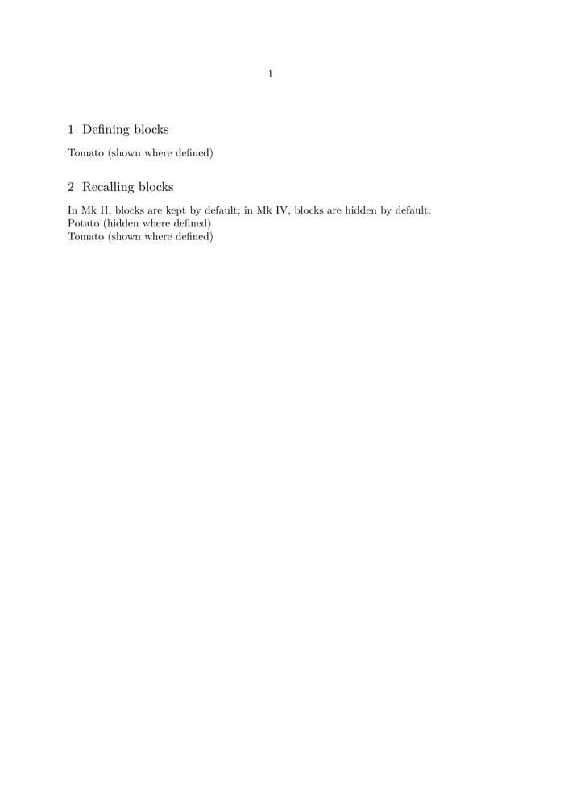

Syntax (autogenerated)
| \hideblocks[...,...][...,...] | |
| [...,...] | name |
| [...,...] | name |
Syntax
| \hideblocks[...,...,...][...,...,...] | |
| [...,...,...] | names of block types to hide |
| [...,...,...] | tags to further specify what to hide |
Description
From here on, do not print blocks where they are defined.
Example
-
\starttext \defineblock[myblock] \section{Defining blocks} \beginmyblock In Mk II, blocks are kept by default; in Mk IV, blocks are hidden by default. \endmyblock \hideblocks[myblock] \beginmyblock Potato (hidden where defined) \endmyblock \keepblocks[myblock] \beginmyblock Tomato (shown where defined) \endmyblock \section{Recalling blocks} \useblocks[myblock] \stoptext
gives
- 
See also
- \defineblock to define a new kind of block.
- \setupblock to set up block style.
- \keepblocks to start displaying blocks where they are defined.
- \hideblocks to stop displaying blocks where they are defined.
- \useblocks to display blocks.
- \selectblocks to display only blocks mentioned in the current section.
- \processblocks to process blocks without printing them.
- \forceblocks
- \nomoreblocks to allow one-pass compilation under certain conditions.
Help from ConTeXt-Mailinglist/Forum
All issues with: